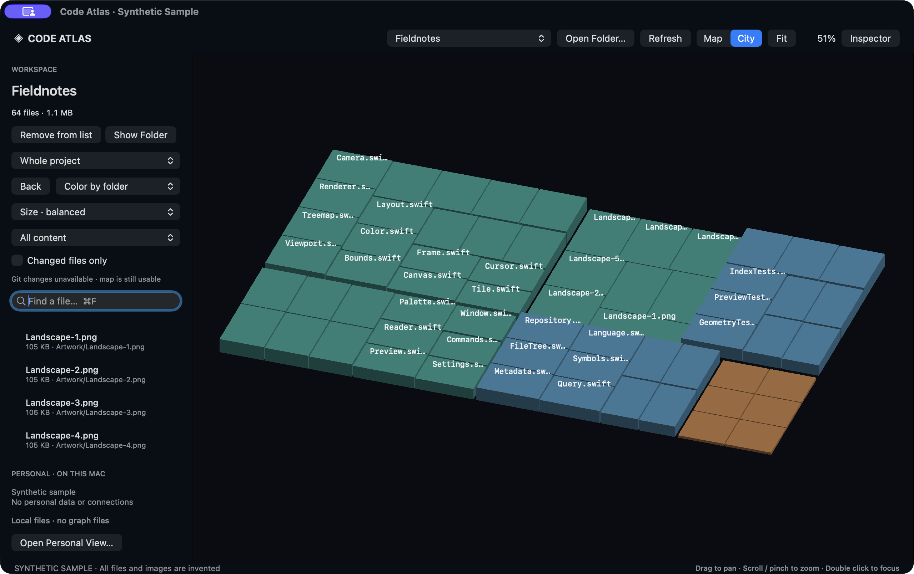

Find your bearings.
See folders and files as a map. Switch to City for a different perspective on the same layout. Search and color reveal patterns.
A NEW PERSPECTIVE ON YOUR FILES
A folder becomes a landscape.
A file becomes a place you can go.
Explore code, documents, and media in a native macOS map. Zoom in to read. Pull back to see how it all fits.
See it in motion Native macOS app · available as source
CONTEXT, WITHOUT THE TAB HOPPING
See folders and files as a map. Switch to City for a different perspective on the same layout. Search and color reveal patterns.
Zoom into code, read Markdown, preview an image, or play local media. The detail lives inside the place you found it.
Scroll back through a document and beyond its beginning to return to the map. Escape offers a direct way back.
A QUICK LOOK INSIDE
Recorded from the actual native app using only invented code, documents, and artwork. The silent clip moves from Map to City, opens source, a document, and an image, then returns to the overview.
Download videoLOCAL BY DESIGN
The native explorer runs on your Mac, with no configured cloud backend, analytics, or upload service. This public page contains generated demonstration content only and cannot access your files.
TAKE A LOOK AROUND
Code Atlas is available to build from source.
Bring a folder. See what you find.
git clone https://github.com/FibonacciAi/code-atlas.git
cd code-atlas
./script/build_and_run.shRequires macOS 14+ and Swift 5.10+.
Development build; a notarized installer isn’t available yet.